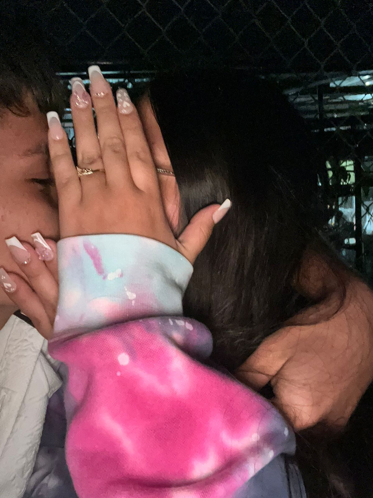
📖 Nuestra Historia

Primeras conversaciones
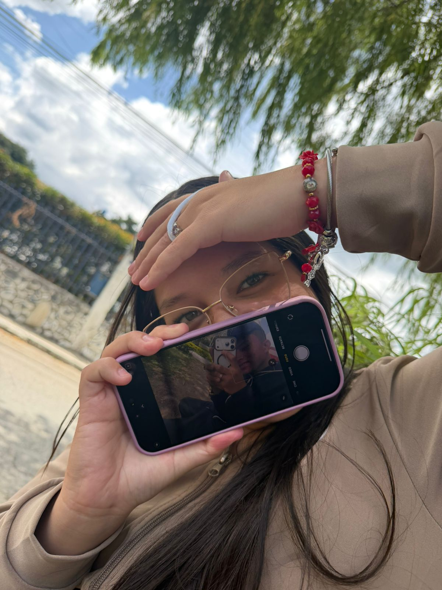
Primeras sonrisas
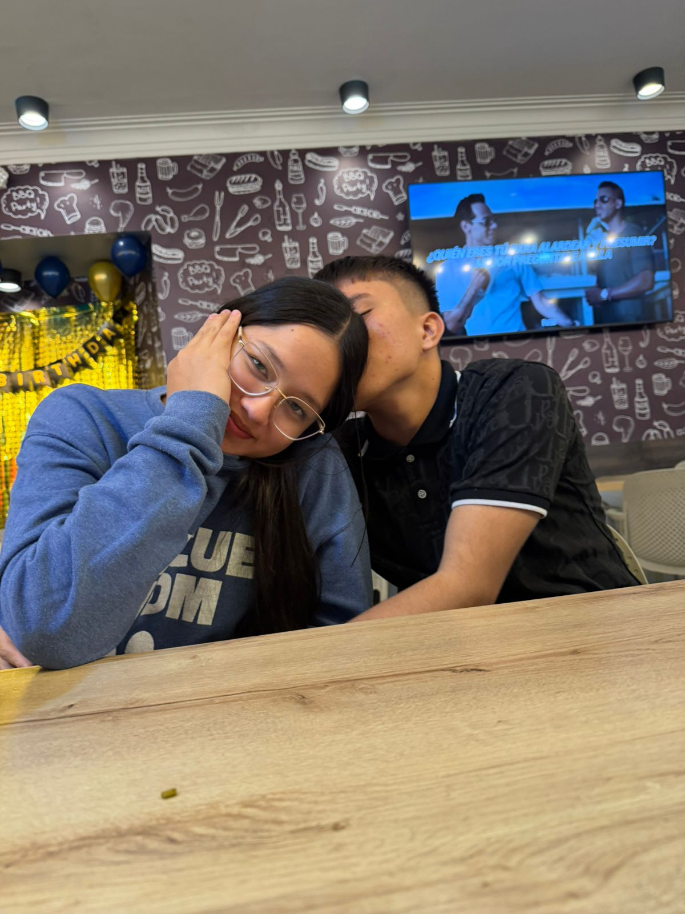
Preparando una sorpresa para Anali...
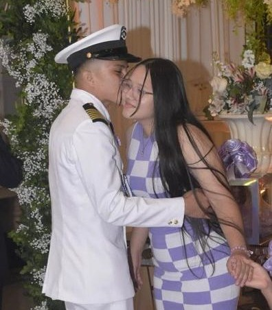
Desde el 2 de enero de 2026
Cada latido de esta pagina guarda un pedacito de lo que eres para mi.
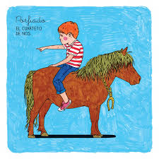



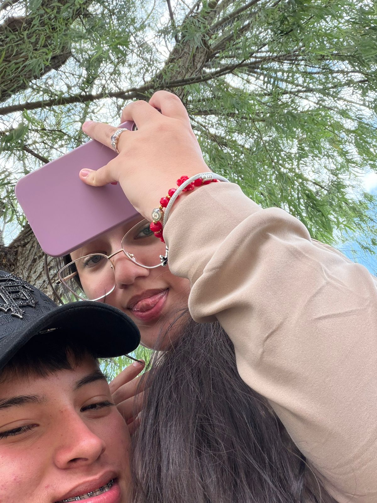
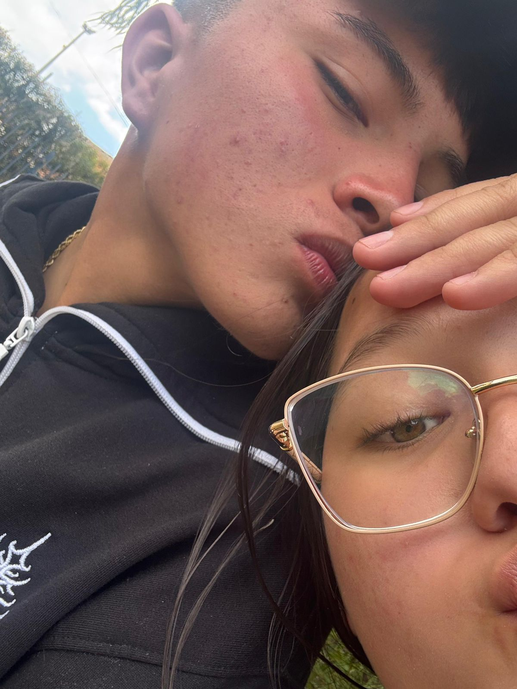
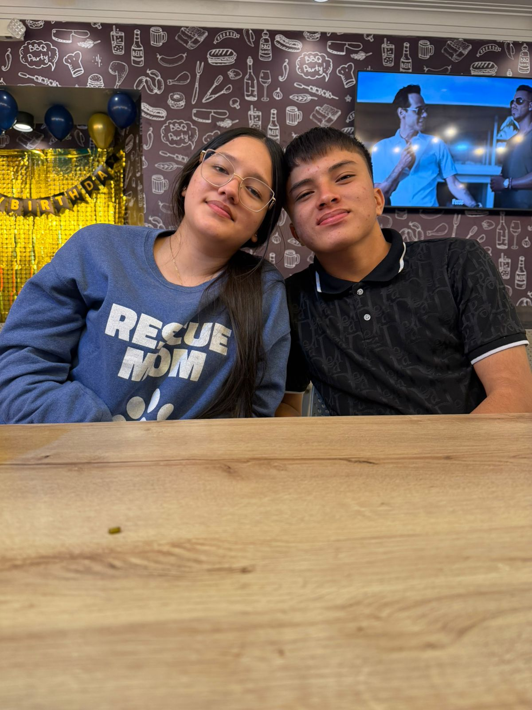
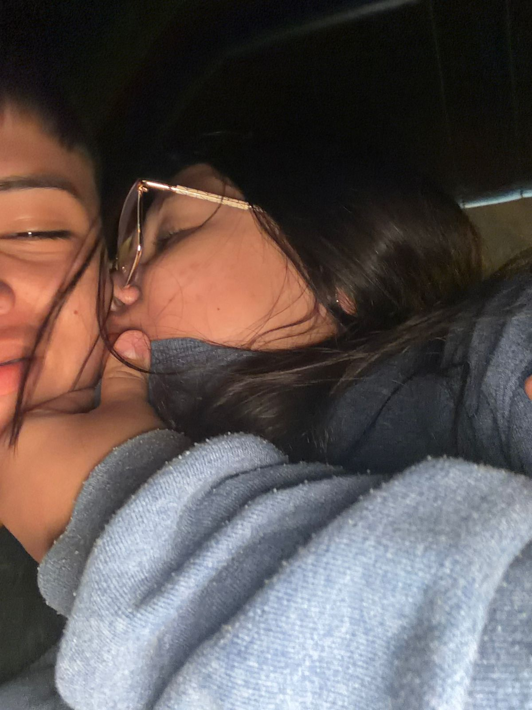
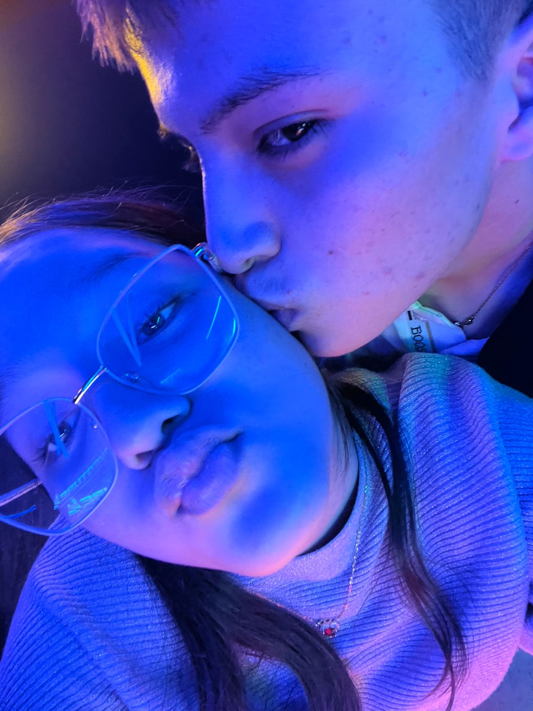
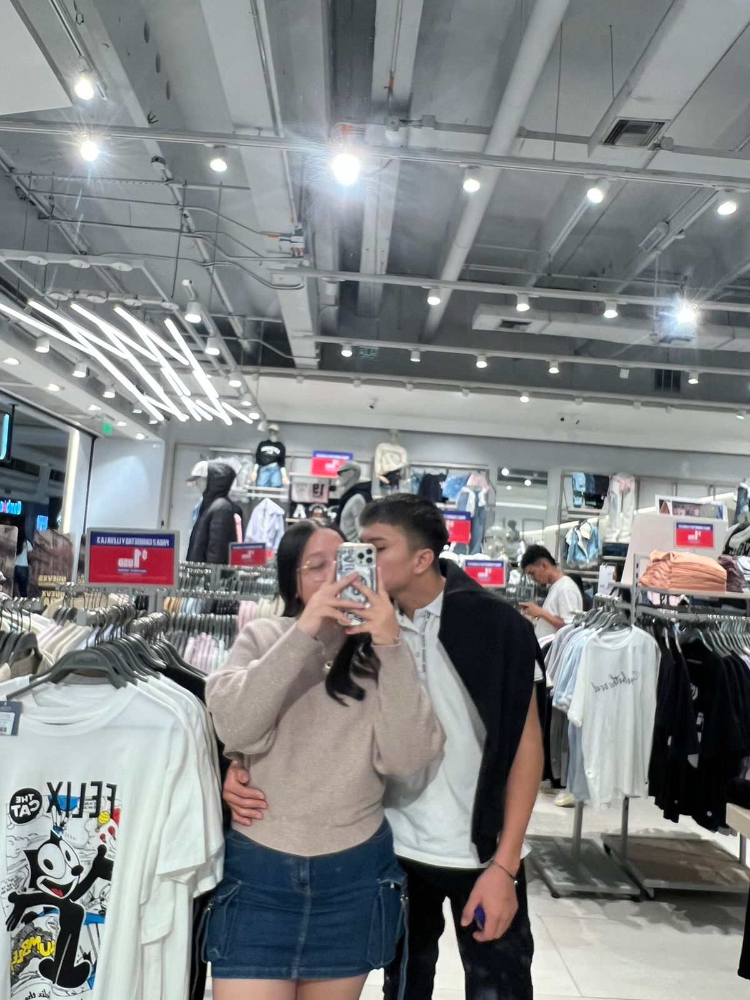
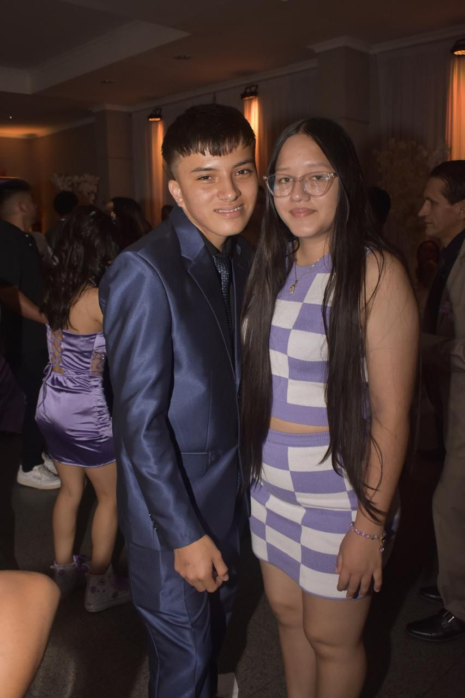
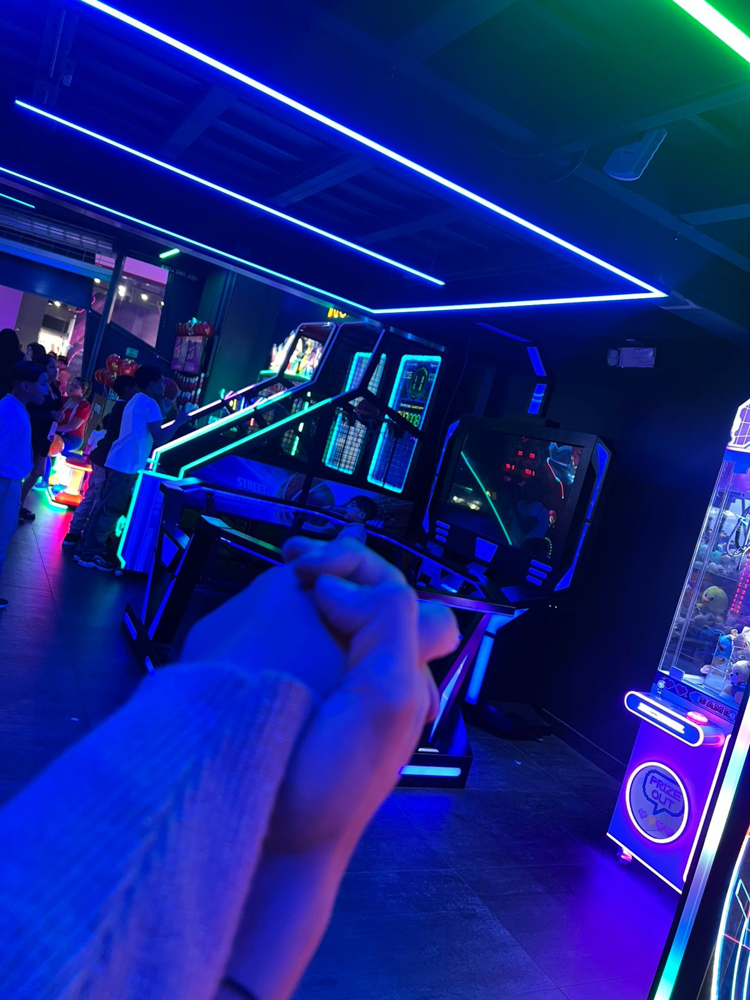

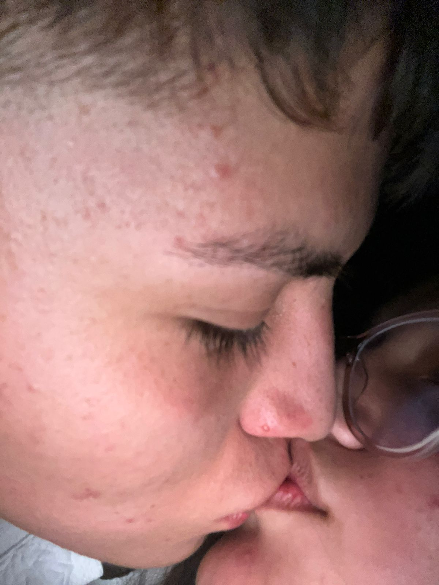
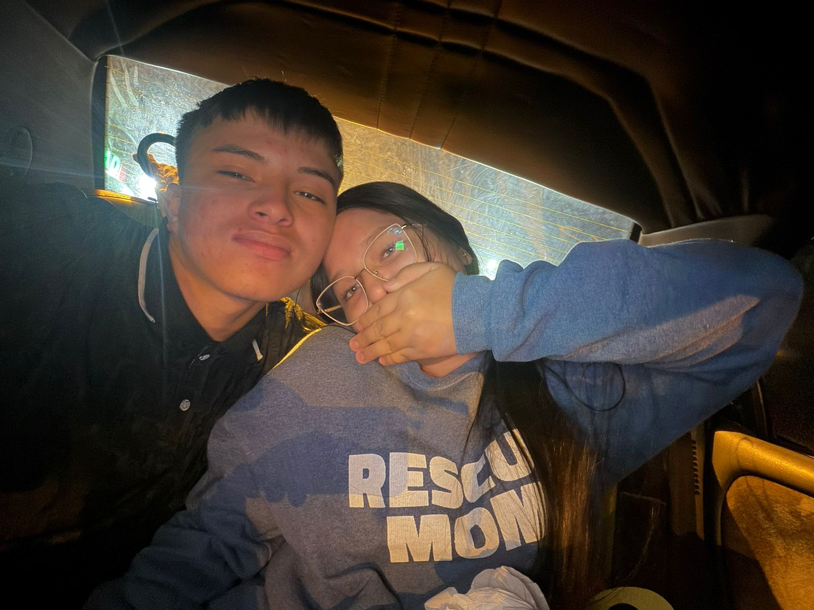
Si amarte fuera un pecado te cometeria a diario, iria al infierno si fuese necesario y presumiria a los demonios que fui al paraisos, que para ello besar tus labios era preciso, y que para llegar al cielo deberiamos amarnos sin pedir permiso.
Lo nuestro no se planeo, y pienso que ni haciendo el mejor de los planes, hubieramos echo una historia tan bonita como la nuestra. Si imagino un lugar donde quisiera volver, ese sitio eres tu.
Analii No se ni por donde empezar, porque cuando se trata de ti, las palabras se me quedan cortas.
Desde el primer momento en que apareciste en mi vida, algo en mi cambio, no fue solo atraccion, ni simple curiosidad; fue como si el destino me hubiera puesto frente a la persona correcta para mi, tus ojos me hablaron antes de que tus labios lo hicieran, y tu sonrisa se grabo en mi memoria como la luz mas calida en medio de cualquier oscuridad. Ese instante, aunque breve, fue eterno en mi corazon, porque senti que mi alma habia encontrado un reflejo en la tuya.
Cada dia contigo es una nueva razon para agradecer.
Agradezco tus palabras que siempre saben como calmar mis tormentas, agradezco tu ternura que convierte cualquier momento en un refugio, agradezco tu risa que ilumina hasta el rincon mas escondido de mi ser. A tu lado he descubierto lo que significa el amor verdadero: ese que no se mide en detalles superficiales, sino en la capacidad de estar, de acompanar, de sostener y de elegirnos una y otra vez, incluso en medio de las dificultades.
Lo que mas admiro de ti es esa manera tan tuya de mirar la vida. Eres una persona llena de suenos, de fuerza, de progresar. Contigo aprendi que amar no es poseer, sino compartir; que no se trata de perderse en el otro, sino de crecer juntos, de inspirarnos mutuamente para ser mejores. Me inspiras a querer luchar por lo que quiero, me inspiras a confiar en que los imposibles se vuelven posibles si tengo tu mano entrelazada con la mia.🥹
A veces me sorprendo pensando en todos los momentos pequenos que hemos vivido y que, aunque parezcan insignificantes, para mi son tesoros. Ese mensaje inesperado que me manda sonreir como un nino, esa caricia sutil que parece decir mas que mil palabras, esos abrazos en los que el mundo se detiene y todo cobra sentido. Me he dado cuenta de que el amor no esta solo en las grandes demostraciones, sino en esas cosas sencillas que hacen que cada dia sea especial.
Sueno con nuestro presente, pero tambien con nuestro futuro. Me imagino a tu lado en mil escenarios distintos: caminando de la mano por calles desconocidas, riendo en la cocina mientras intentamos preparar algo juntos, compartiendo silencios en una tarde tranquila, mirandonos como si cada dia fuera el primero. Y mas alla de lo que pase, se que lo importante no es el lugar ni las circunstancias, sino que estemos juntos, que sigamos eligiendonos como hasta ahora.
Quiero que sepas que admiro cada parte de ti, incluso aquellas que quizas no te gustan tanto. Para mi, tus imperfecciones no son defectos, sino senales de humanidad que me hacen quererte mas. Porque amar no es idealizar, sino aceptar y valorar en totalidad. Y yo te amo tal cual eres, con tus luces y con tus sombras, con tus aciertos y tus errores, con tus dias brillantes y tus dias grises.
Si pudiera darte algo, mas alla de mis palabras, te daria la certeza absoluta de que mi amor es verdadero, constante y profundo. Que no es pasajero ni condicionado, sino un sentimiento que crece y se fortalece con cada experiencia, con cada desafio y con cada alegria compartida.
Quiero que cada vez que dudes, recuerdes esto: eres la persona mas especial de mi vida, la razon por la que sonrio sin motivo, el pensamiento que me acompana en cada amanecer y en cada noche antes de dormir. Si la vida me diera la oportunidad de volver a empezar, no dudaria en buscarte, en encontrarte de nuevo y en elegirte mil veces mas.
Te amo con una intensidad que no puedo explicar, con una pasion que me quema el alma, con una ternura que me desborda, te amo en lo simple y en lo complejo, en lo cotidiano y en lo extraordinario, en lo real y en lo sonado, te amo hoy, te amare manana y te seguire amando en todos los dias que nos queden por compartir.
Te amo mi reina, te amo ni princesa, te amo mi nina, te amo analii, te amoo mi todo, TE AMOOO MUCHO Y GRACIAS POR TANTO 💞